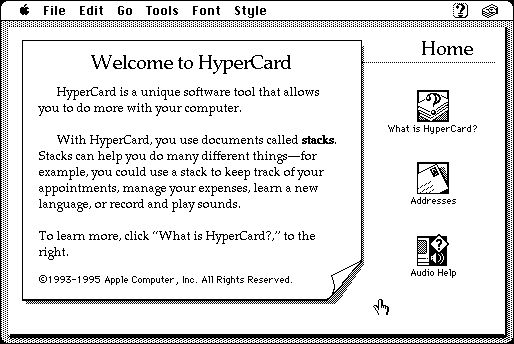

Download (external link)
HyperCard_Player_2.4.1.smi.bin (1.7M) Hypercard Player 2.4.1
copyright: Apple Computer, Inc.
mod date: Jun 11, 1998
license: free, but don't redistribute
Hypercard Stack Viewer.
Self mounting image such as this one do not seem to work on a Macintosh Plus with American system software, but strangely they do seem to work with British system software. See the British System 7.0.1 utility disk Recipe for Mini vMac.

Here is the md5 checksum for the download, signed with Gryphel Key 5:
--------- GRY SIGNED TEXT --------- b88627747437c623d58173f2be9fdc36 HyperCard_Player_2.4.1.smi.bin ------- BEGIN GRY SIGNATURE ------- Gry/4Xa8CFcUzxdN/C/sqh/pLR3PXhZh5m4ymkMDcp+CjXqfhoLBgCPrsX5ZScKR J5FOYWL4tfJ2YTE4xgtZNBjEVyHjw8v7EBuzviBOzUv2nO9RaeQ6I9AIGgJjTvml JqgwhfS9HQUUAqc5T3+M8UhgQf9+6IkeUwQ8MwauzqH6uZLS0n1paTZLGAk19dv9 -------- END GRY SIGNATURE --------